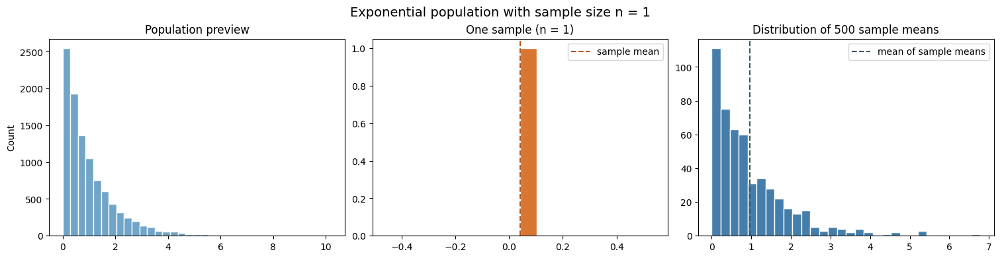
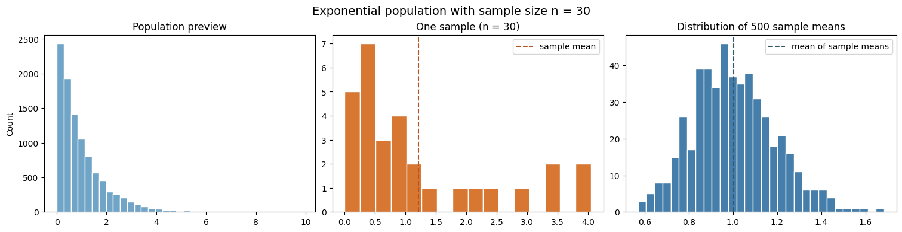
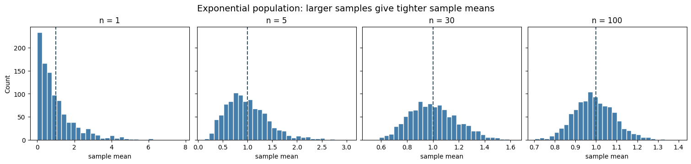
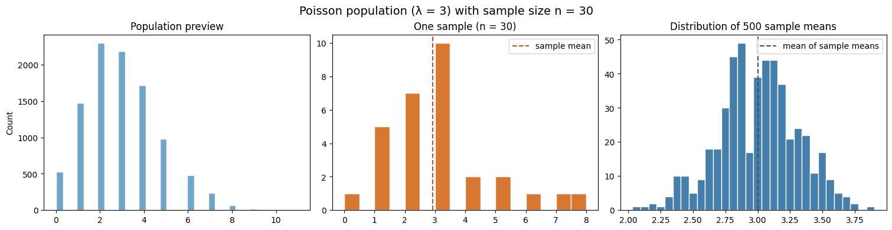

import matplotlib.pyplot as plt
import numpy as np
rng = np.random.default_rng(seed=4520)Central Limit Theorem: simulation in Python

The central limit theorem (CLT) explains a surprising pattern: even when individual observations are skewed or discrete, the sample mean often has an approximately normal distribution when the sample size is sufficiently large.
This notebook uses NumPy simulations to make that pattern visible. It is a companion to the browser interactive and is designed to run directly in Google Colab.
Learning objectives
By the end of this notebook, you should be able to:
- distinguish one observation, one sample, and a sample mean;
- simulate repeated samples from a population;
- build the distribution of sample means; and
- explain why increasing the sample size changes that distribution, while increasing the number of trials only reveals it more clearly.
1. One population, many samples
Suppose a population produces observations denoted by \(X\). A sample contains \(n\) independent observations from that population. Its sample mean is
\[\bar{x} = \frac{1}{n} \sum_{i=1}^{n} x_i.\]
To study how \(\bar{x}\) varies, we repeat the whole sampling process \(B\) times. This gives us \(B\) sample means.
def simulate_sample_means(draw_observations, sample_size, trials, rng):
"""Draw `trials` samples and return the samples and their means."""
samples = draw_observations(rng, size=(trials, sample_size))
means = samples.mean(axis=1)
return samples, means
def show_clt_experiment(draw_observations, sample_size, trials, rng, title):
"""Plot the population, one sample, and all simulated sample means."""
population_preview = draw_observations(rng, size=10_000)
samples, means = simulate_sample_means(
draw_observations, sample_size=sample_size, trials=trials, rng=rng
)
fig, axes = plt.subplots(1, 3, figsize=(15, 3.8), constrained_layout=True)
axes[0].hist(population_preview, bins=35, color="#70a5c8", edgecolor="white")
axes[0].set(title="Population preview", ylabel="Count")
axes[1].hist(samples[0], bins=16, color="#d77732", edgecolor="white")
axes[1].axvline(samples[0].mean(), color="#b65420", linestyle="--", label="sample mean")
axes[1].set(title=f"One sample (n = {sample_size})")
axes[1].legend()
axes[2].hist(means, bins=30, color="#457eaa", edgecolor="white")
axes[2].axvline(means.mean(), color="#355766", linestyle="--", label="mean of sample means")
axes[2].set(title=f"Distribution of {trials} sample means")
axes[2].legend()
fig.suptitle(title, fontsize=14)
plt.show()
return means2. A right-skewed population: exponential observations
An exponential distribution can model a waiting time under a simple constant-rate assumption—for example, the time until the next event in a process. It is strongly right-skewed, so it is a useful CLT example.
Start with \(n=1\). In this case, every sample mean is just one observation, so the rightmost plot should look much like the population.
draw_exponential = lambda rng, size: rng.exponential(scale=1, size=size)
means_n1 = show_clt_experiment(
draw_exponential, sample_size=1, trials=500, rng=rng,
title="Exponential population with sample size n = 1"
)
Now increase the sample size to \(n=30\). The individual observations are still exponential, but each point in the rightmost plot is now an average of 30 independent observations.
means_n30 = show_clt_experiment(
draw_exponential, sample_size=30, trials=500, rng=rng,
title="Exponential population with sample size n = 30"
)
3. Change the sample size, not the population
The CLT predicts that the distribution of sample means becomes narrower as \(n\) grows. The standard deviation of the sample mean is called the standard error; under the usual independent-sampling assumption, it decreases in proportion to \(1 / \sqrt{n}\).
sample_sizes = [1, 5, 30, 100]
trials = 1_000
fig, axes = plt.subplots(1, len(sample_sizes), figsize=(15, 3.5), sharey=True, constrained_layout=True)
for ax, sample_size in zip(axes, sample_sizes):
_, means = simulate_sample_means(draw_exponential, sample_size, trials, rng)
ax.hist(means, bins=30, color="#457eaa", edgecolor="white")
ax.axvline(1, color="#355766", linestyle="--")
ax.set(title=f"n = {sample_size}", xlabel="sample mean")
axes[0].set_ylabel("Count")
fig.suptitle("Exponential population: larger samples give tighter sample means", fontsize=14)
plt.show()
4. A discrete population: Poisson counts
The CLT does not require continuous observations. A Poisson distribution models a count of events in a fixed interval—for example, the number of detected defects or arrivals during a production interval. Here the population is discrete, but averages of repeated samples can still be approximately normal.
draw_poisson = lambda rng, size: rng.poisson(lam=3, size=size)
poisson_means = show_clt_experiment(
draw_poisson, sample_size=30, trials=500, rng=rng,
title="Poisson population (λ = 3) with sample size n = 30"
)
Check-in
- Keep the exponential population and set
sample_size=100. How does the spread of the sample means compare withsample_size=30? - Keep
sample_size=30, but increasetrialsfrom 500 to 2,000. Does this change the spread of a sample mean, or only how clearly you see its distribution? - Replace the Poisson draw function with
rng.binomial(n=10, p=0.2, size=size). What does the distribution of sample means look like?
# Try one modification at a time.
# means_n100 = show_clt_experiment(
# draw_exponential, sample_size=100, trials=500, rng=rng,
# title="Exponential population with sample size n = 100"
# )
# draw_binomial = lambda rng, size: rng.binomial(n=10, p=0.2, size=size)
# binomial_means = show_clt_experiment(
# draw_binomial, sample_size=30, trials=500, rng=rng,
# title="Binomial population with sample size n = 30"
# )
# Return to the Foundations page when you are finished.